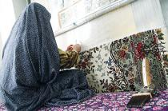

|
|

دستاوردهای تولیدی زنان سرپرست خانوار در قالب گروه های همیار ارایه می شود
سه شنبه12 اردیبهشت 1391
خبرگزاری بین المللی زنان : مدیركل بهزیستی استان تهران گفت: زنان سرپرست خانوار زیر پوشش سازمان بهزیستی در استان تهران می توانند دستاوردهای تولیدی خود را در زمینه های مختلف در قالب گروه های "زنان همیار" به مردم ارایه كنند.
ولی الله نصر روز دوشنبه در گفت و گو با خبرنگاران افزود: زنان بی سرپرست و بد سرپرست نیز می توانند در قالب گروه های همیار، محصولات خود را به مردم معرفی كنند.
وی گفت: بانوانی كه پیشه یا حرفه خاصی را آموزش دیده اند، می توانند به شكل یك گروه منجسم با یكدیگر كار كنند.
نصر اضافه كرد: به عنوان مثال، زنانی كه مهارت های آشپزی را آموزش دیده اند، می توانند با طبخ غذاهای سنتی و جدید، محصولات خود را در مكان های مختلف عرضه كنند.
وی ادامه داد: گروه های زنان همیار از لحاظ مالی، دریافت وام و قرار گرفتن در چرخه اقتصادی به طور كامل از طریق بهزیستی حمایت می شوند.
نصر با بیان اینكه اولویت تشكیل گروه های همیار زنان با زنان سرپرست خانوار زیر پوشش سازمان بهزیستی است، گفت: زنان سرپرست خانوار دارای شرایط پذیرش در بهزیستی نیز پس از عضویت در این سازمان می توانند در گروه های همیار زنان فعالیت كنند.